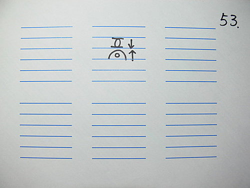

問答錄 73：脈理分析
作者：陳建元
陳老師你好：
最早開始我所問的問題中（問題來自 36.1 條，五層脈所代表的病機），我發現我有個地方沒問，到現在還是我的疑惑：
(1) 在五層脈中→第一層：圖中有寫無力為虛 （這個跟第三層陽明火位不足的虛有什不同呢？？）
(2) 老師提到-->使用的方法是用28脈畫出脈圖後，然後再用五層脈病機參合來做判斷。 一個虛脈之下又疊一個滑洪實脈是什麼意義？【圖53】→可以請老師說明一下嗎？？ 謝謝老師的指導～～～

答：五層脈的病機後面會再繼續說明，需要說明的地方還很多。
(1) 在五層脈中→第一層：圖中有寫無力為虛 （這個跟第三層陽明火位不足的虛有什不同呢？？）
第一層虛，底下全空（第三層陽明火位也虛）方是真虛。第一層虛，第三層陽明火位不虛是假虛，原因是因瘀、氣、熱、毒等阻礙脈道，脈道搏動無力，容易誤認為虛，其實是實證。
(2) 一個虛脈之下又疊一個滑洪實脈是什麼意義？【圖53】→可以請老師說明一下嗎？？
〈圖53〉中一個滑洪實脈在脾位，心位則一弱脈。合起來看後，代表心位的弱脈是假的，只是滑洪實脈的脈焰（就像火焰上的熱氣一樣，只是脈脊而已）。所以這一脈中的總和，脾位所顯示的滑洪實脈才是真脈，心位的虛而無力脈是假脈不用考慮。
單純以28脈判斷病機時，一定會遇到很多類似這種兩難複雜的情況（〈圖53〉這種情況臨床上很常見吧！），不知何者是真是假，絕對不是像書本上寫的那麼順利OK就能判斷，這也是為什麼脈診不遇名師指點，自己摸索一生所知仍然有限的原因。五層脈病機是用來修正28脈法判斷時所遇到的迷惑處，這是一種不傳的訣竅，翻遍歷代的書本也未曾有醫家提出，如果沒人點出，單靠28脈能發揮的程度範圍會很有限。
【引用請先來信告知徵求同意，若有涉及販售營利等商業行為，版權所有拷貝盜用必究。】
【藥王脈學講壇】http://blog.xuite.net/drjychen/twblog